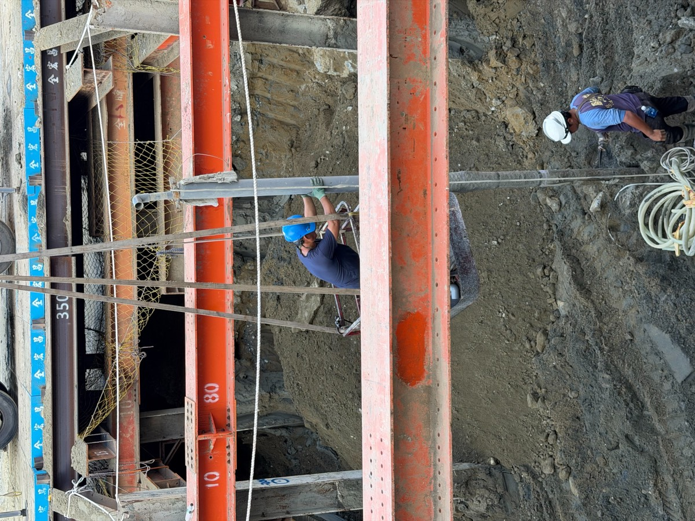
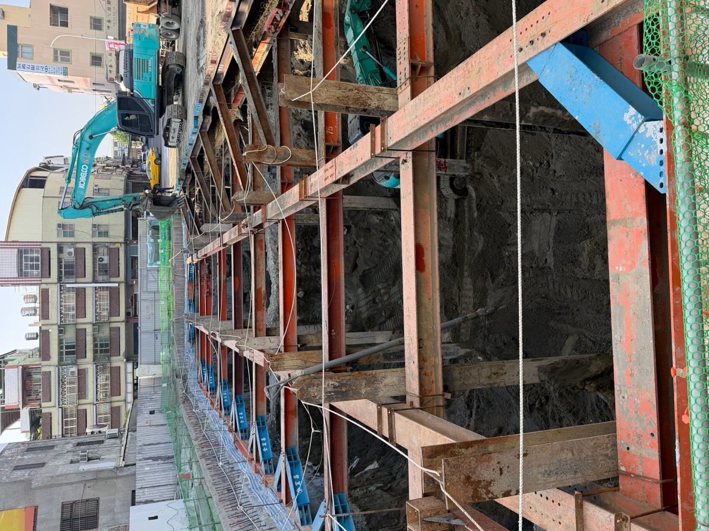

SINCE 60 YEARS · CHANGHUA
彰化鑿井
六十年在地經驗
打一口穩定好井
家用井、農業灌溉井、工廠工業井、大樓地基降水點井。從現場勘查、水權申請、鑿井、洗井，到沉水馬達安裝試水，一次完成。
農地灌溉養殖・畜牧場工廠用水建設營造住家自用


60年鑿井工程經驗
1公尺逐段採樣看地層
6道品質控管流程
一條龍勘查到試水一次完成
Process
依地層調整做法，不用一套方法硬套
井會不會出砂、水量穩不穩，關鍵在濾水管、濾網、濾石與洗井這幾步有沒有配合地層。
- 1
現場勘查・備料定位
確認鑽井位置、施工動線與排水方向。濾水管、礫石、泵浦與洗井設備一次備齊，減少施工中斷。
- 2
鑽進・每 1 公尺採樣
以水鑽機鑽孔，鑽進期間每 1 公尺取一次土樣，觀察砂、泥、礫石比例，並留下紀錄。
- 3
依地層配置濾網
砂層較細的段落使用較密的濾網，降低細砂進入；出水層較粗則相對調整，兼顧濾水效率。
- 4
安裝濾水管
鑽孔完成後置入濾水管，保持垂直與正確深度，管外留出空隙供濾石回填。
- 5
均勻回填濾石
沿井管外側分段、均勻回填濾石，避免單側堆積或局部空洞，讓濾石撐滿濾水管周邊。
- 6
空壓洗井・安裝試水
以空壓方式排出井內汙泥與細砂，沖洗到出水穩定，讓濾石層更密實，再安裝馬達試水。
Projects
施工實績｜大樓地基束水降水點井
近期營造工地紀錄，從點井鑽設、沉水馬達下放到井口保護。


